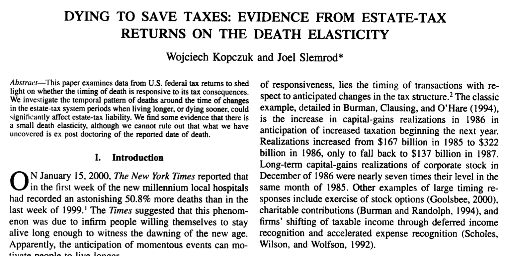

RSC Economics Experience · July 2026
Meng Hsuan “Rex” Hsieh
Press → to begin
Agenda for Today
Going further? Externalities and tax incidence get their own Appendix deck.
Part 1
Press ↓ to continue
Interventions · Rationale
The competitive benchmark assumes that prices reflect all relevant costs and benefits and that buyers and sellers can make informed choices.
Evaluate a policy’s benefits, costs, and effects on different groups.
Interventions · Price Controls
In this model, with no government purchases, quantity traded is the smaller of Qs and Qd.
Interventions · Price Floor
In this hypothetical competitive labor market, a $15 minimum wage exceeds the $12 equilibrium wage. Don’t compute it — read the graph. Press →.
Interventions · Price Ceiling
In this hypothetical rental market, rent is capped at $1,500, below the $2,000 equilibrium rent. Don’t compute it — read the graph. Press →.
Interventions · Price Controls Recap
A ceiling below equilibrium opens a shortage; a floor above it opens a surplus. Either way the quantity traded is the short side. Press →.
Interventions · Taxes
How do taxes affect market outcomes?
Interventions · Taxes
A market at equilibrium \( (Q^* = 40,\ P^* = \$3) \) meets a big \( \$3 \) per-unit tax — drawn large (not to scale) so every piece shows. Press → to add each piece.
Tax wedge \( t = P_b - P_s \) ⇒ quantity falls ⇒ the trades between \( Q_{\text{tax}} \) and \( Q^* \) vanish. That lost surplus is the DWL triangle.
Interventions · Tax Example
Interventions · Taxes
Tax revenue is a transfer to government. Add it when calculating surplus after a tax:
\[ W=CS+PS+\text{government revenue}. \]
Deadweight loss measures gains from trades that the tax prevents. In this model, a tax that leaves quantity unchanged creates no such loss.
Interventions · Taxes

Kopczuk and Slemrod (2003) find small changes in reported death dates around estate-tax reforms. They cannot rule out changes in reporting.
What evidence would distinguish reported dates from actual timing?
Interventions · Taxes
In the U.S., married couples generally choose between joint and separate filing. Marriage can raise or lower combined taxes depending on incomes and tax rules.
Filing status generally depends on marital status on the last day of the tax year.
Part 2
Why voluntary payment can underfund cleaner air. Press ↓
Bridge · Back to Welfare
Without market failures, competitive trade maximizes total surplus in our model.
With external costs or benefits, or difficulty collecting payment for public goods, private choices can leave gains unrealized.
A policy can improve the outcome if its benefits exceed its implementation costs and other harms.
The Air We Breathe
Cleaner outdoor air benefits many people at once. Why is it difficult to charge each beneficiary for an improvement?
Public Goods · Property 1 of 2
Public Goods · Property 2 of 2
Definition · The Big Picture
Cross “can you exclude non-payers?” with “does one person’s use crowd out another’s?” Press →.
The Core Problem
Part 2 · Takeaway
A public good is non-rival and non-excludable. Those properties can make voluntary funding too low.
Governments can finance provision through taxes or coordinate pollution reduction. Communities, charities, and firms can also contribute.
Compare the total benefits of more provision with its resource and administrative costs. Government provision is not automatically efficient.
Summary
Press ↓ to continue
Summary
Wrap-Up
This wraps up the first part of the course!
We have covered decision-making on the margin, supply and demand dynamics, elasticities, firm cost structures, monopoly, perfect competition, and welfare economics.
This means… something fun next Monday, and the Final Exam next Wednesday!
Wrap-Up · Final Exam
Post final exam, we’ll have a fun little discussion/wrap-up!
Thank You
Final Exam is next week.
Come to office hours w/ any questions or concerns.
See you next Monday at 9am sharp!